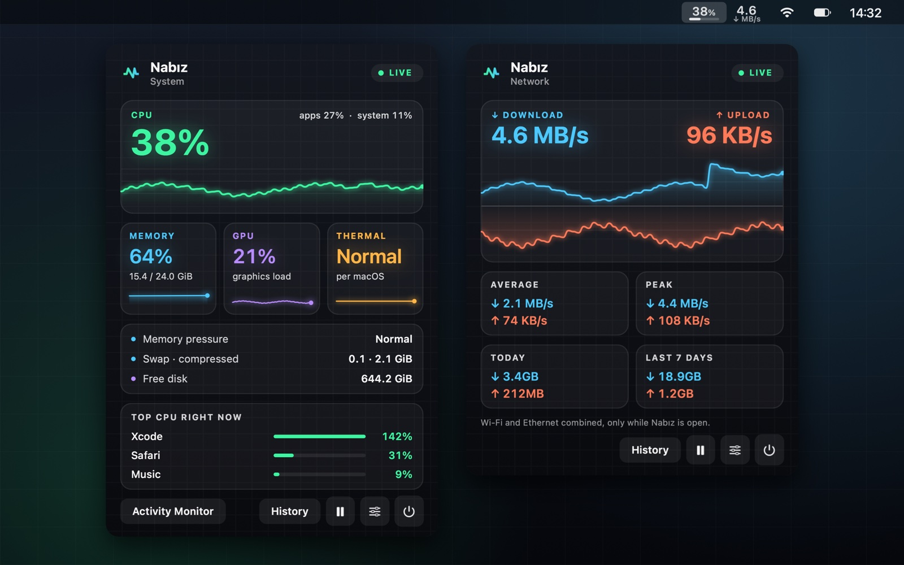
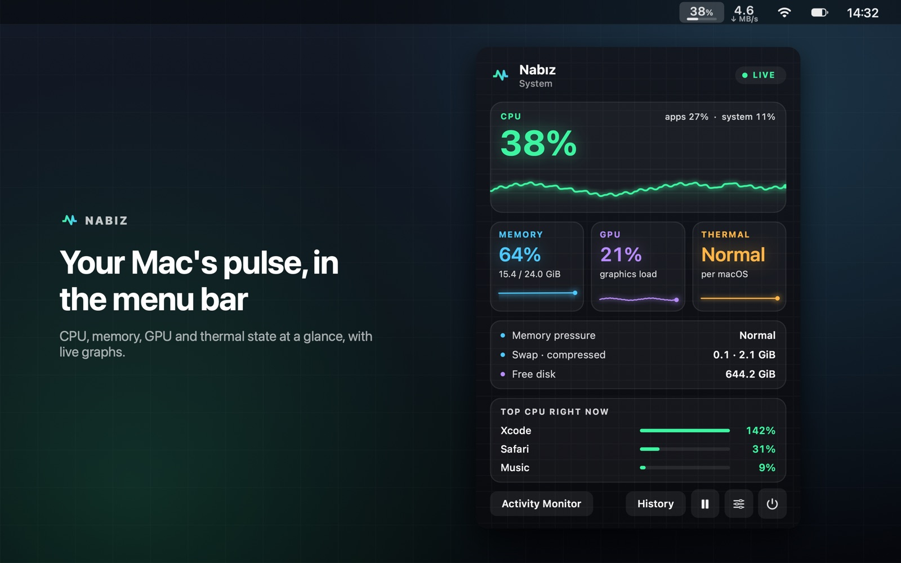
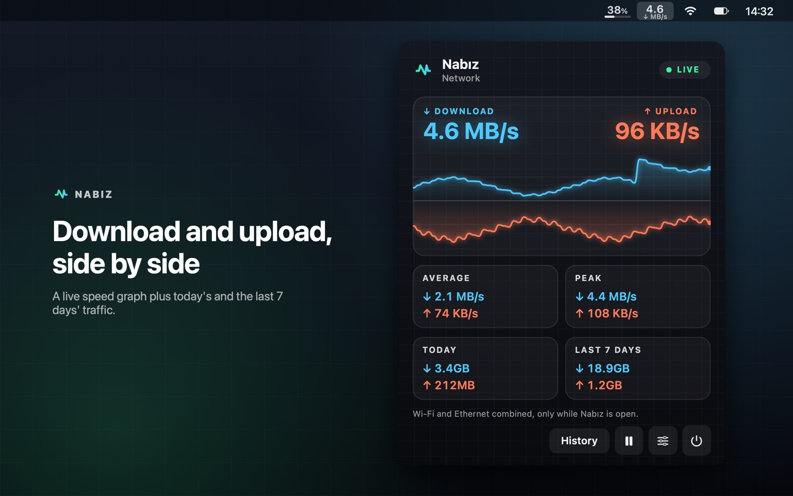
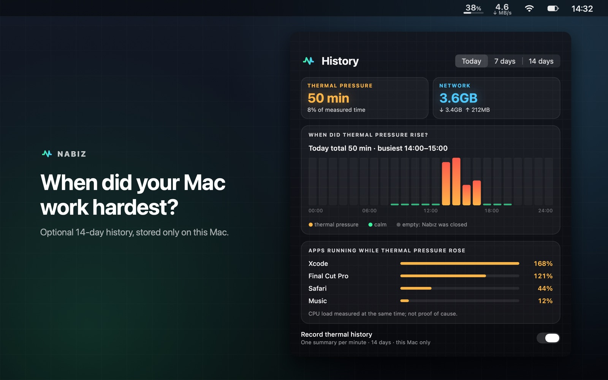
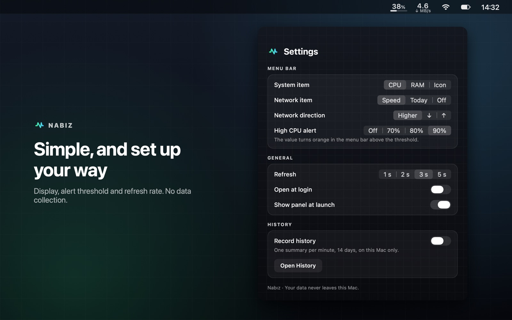

CPU, memory, GPU, thermal state and network speed with live graphs. Two compact menu bar items, each with its own panel. Free, open source and private.
macOS 13 or later · Apple silicon and Intel · Turkish and English

CPU with a live graph split into apps and system, plus memory, GPU, thermal state, memory pressure, swap, free disk and the apps using the most CPU right now.
Download and upload on one mirrored graph, average and peak speed, and traffic measured today and over the last 7 days.
Optional per-minute summaries kept for 14 days on your Mac: see when it worked hardest and which apps were running.
Large, rounded numbers with a thin load bar. Fixed widths, so the menu bar never jumps.
Fully sandboxed. No accounts, ads, analytics or network requests. Your data never leaves your Mac.
MIT licensed Swift and AppKit, no dependencies. Build it yourself in one command.




Requires Xcode command line tools and a code signing identity (sandboxed apps need a stable identity).
git clone https://github.com/OmerYasirOnal/nabiz.git cd nabiz/app NABIZ_SIGN_IDENTITY="Apple Development: …" ./build.zsh open build/Nabiz.app
Yes. Nabız is free and open source under the MIT license.
No. It is fully sandboxed, makes no network requests and has no accounts, ads or analytics. Measurements stay on your Mac.
Macs running macOS 13 Ventura or later, on both Apple silicon and Intel.
The Mac App Store version shows the macOS thermal state, since sandboxed store apps cannot read the sensor controller. The version you build from source can also read CPU temperature and fan speed.
Two narrow items with fixed widths. You can hide the network item or reduce the system item to a small pulse icon.